This page brings together basic information about the Armenian script and its use for the Armenian language. It aims to provide a brief, descriptive summary of the modern, printed orthography and typographic features, and to advise how to write Armenian using Unicode. The transcriptions reflect Eastern Armenian usage, unless otherwise noted
Select part of this sample text to show a list of characters, with links to more details.
Change size: 28px
Հոդված 1 Բոլոր մարդիկ ծնվում են ազատ ու հավասար իրենց արժանապատվությամբ ու իրավունքներով։ Նրանք ունեն բանականություն ու խիղճ և միմյանց պետք է եղբայրաբար վերաբերվեն։
Հոդված 2 Ամեն ոք ունի այս Հռչակագրում բերված բոլոր իրավունքներն ու ազատությունները առանց որևէ խտրության՝ հիմնված ցեղային, մաշկի գույնի, սեռի, լեզվի, կրոնի, քաղաքական կամ այլ համոզմունքների, ազգային կամ սոցիալական ծագման, ունեցվածքի, դասային պատկանելության կամ որևէ այլ կարգավիճակի վրա։ Ավելին, ոչ մի խտրականություն չպետք է լինի հիմնված երկրի կամ տարածքի, քաղաքական, իրավական, կամ միջազգային կարգավիճակի վրա, լինի դա անկախ, խնամարկյալ, ոչինքնակառավարվող կամ ինքնիշխանության որևէ այլ սահմանափակումով պետական կազմավորում, որին պատկանում է մարդը։
The Armenian script is used widely by Armenians to write the Armenian language. Over time, some differences of pronunciation have developed for some letters in the Eastern and Western Armenian communities.
Հայոց գրերḥayɔʦʰ grer (Hayoc' grer) Armenian lettersՀայոց այբուբենḥayɔʦʰ aybɔwbenhaˈjotsʰ ajbuˈbɛnArmenian alphabet
The Armenian alphabet was created around 405AD by Mesrop Mashtots. Transcription of the Bible and missionary activity was a key driver to the invention. A large body of early Armenian literature exists.
Soviet reforms in the early 20th century led to two distinct orthographic conventions. Broadly speaking, Mesropian (Western) orthography is used throughout the Armenian diaspora (which makes up the majority of Armenian speakers), and the Reformed (Eastern) orthography is used within Armenia.
Armenian is an alphabet. This means that it is phonetic in nature, where each letter represents a basic sound. See the table to the right for a brief overview of features for the modern Armenian language.
Here we focus on the pronunciation and orthography of the Eastern variant of Armenian, which is used in Armenia, even though the majority of Armenian speakers use the Western orthography of the diaspora.
Armenian text runs left-to-right in horizontal lines.
Words are separated by spaces.
The script is bicameral. The shapes of the upper and lowercase forms can differ significantly.
Armenian is an alphabet where vowels are generally written using simple letters. No combining marks are used. However, it is not fully alphabetic because the sound ə is unwritten between consonants. A few letters also have special pronunciation when word-initial.
Letters were traditionally used to represent numbers, but modern texts usually use ASCII digits.
Armenian uses 3 tonal punctuation marks to indicate questions, exclamations and emphasis. These are spacing modifier characters, but they are positioned over base letters much like combining marks.
These are sound of the Eastern variant of Armenian.
Click on the sounds to reveal locations in this document where they are mentioned.
Phones in a lighter colour are non-native or allophones. Source Wikipedia.
Vowel sounds
Consonant sounds
labial
alveolar
post-
alveolar
palatal
velar
uvular
glottal
stops
pb
td
kɡ
aspirated
pʰ
tʰ
kʰ
affricates
t͡sd͡z
t͡ʃd͡ʒ
aspirated
t͡sʰ
t͡ʃʰ
fricatives
fv
sz
ʃʒ
χʁ
h
nasals
m
n
ŋ
approximants
l
j
trills/flaps
rɾ
A notable feature of the Eastern phonology is the 3-way split of the plosive sounds: unvoiced, voiced, and aspirated.j The Western phonology generally maps letters to just voiced and aspirated sounds. For example, the following (simplified) mappings for the bilabial plosives show the pattern for all plosive and affricate letters:
Eastern:պpբbփpʰ Western: պbբpʰփpʰ
Tone
Armenian is not a tonal language.
Structure
tbd
Alphabet
Click on the characters to find where they are mentioned in this page.
The Armenian alphabet has 31 consonants and 8 vowels (one of which is a digraph). Each has upper and lowercase forms; shown above and below, respectively.
Below is the full set of characters needed to represent the vowels of the Armenian language.
ա␣ե␣է␣ը␣ի␣ո␣ւ␣օ␣ևԱ␣Ե␣Է␣Ը␣Ի␣Ո␣Ւ␣Օ
Post-consonant vowels
Vowels following consonants are generally written using simple letters. No combining marks are used. However, it is not fully alphabetic because the sound ə is unwritten between consonants. A few letters also have special pronunciation when word-initial.
Armenian has 7 bicameral vowel letters (so 14 in total) and one more that is only lower case. The sound u is written as a digraph.
Vowel letters
The list below shows the 7 simple vowel letters with an upper and lower case form each, but see also ech_yiwn and digraph_u. Where two pronunciations are given, click on the character for more information.
ի␣օ␣ը␣ե␣է␣ո␣աԻ␣Օ␣Ը␣Ե␣Է␣Ո␣Ա
The letter ը is generally used only at the start or end of a word, and so the sound ə is unwritten between consonants.d
ազդր
օ and its uppercase form are only used in classical orthography, word-initially and in some compound words.d
Ech yiwn
և
և is a ligature that has no single-character uppercase form. It wasn't used prior to the Soviet reform, and is treated differently in the western and eastern orthographies.
Outside Armenia it is not used as frequently, and the lowercase form may often be represented instead by the 2 distinct letters եւ.
In the eastern orthography (Armenia and those Armenians from the former Soviet Union) it capitalises as Եվ,a eg. Եվրոպա
In the western orthography (and eastern Armenian speakers in Iran), it capitalises as Եւ,a eg. Եւրոպա
Digraph U
ՈՒ␣ու
The sound u is written using the two letters ու. In the classical orthography, this was considered a digraph, but in the modern orthography it is a letter of the alphabet.
Standalone vowels
Standalone vowels are written using ordinary vowel letters and no special arrangements.
ականջ
Vowel sounds to characters
This section maps Armenian vowel sounds to common graphemes in the Armenian orthography.
Lowercase graphemes are shown to the left, and uppercase on the right.
Click on a grapheme to find other mentions on this page (links appear at the bottom of the page). Click on the character name to see examples and for detailed descriptions of the character(s) shown.
Plain vowels
i
ի վիզ
Ի
u
ու սուր
ՈՒ
e
part of ևev, pronounced jev when word-initial or standalone. արև
Եվ titlecase in Eastern orthography.
Եւ titlecase in Western orthography.
o
օ in classical orthography, word-initially and in some compound words. օձ
Օ
ə
ը լիքը
Not written medially աստղ
Ը
ɛ
0565, pronounced jɛ word-initially or as a standalone. տերեւ
0567 էակ
0535
0537
ɛ
0578, pronounced ʋɔ word-initially or as a standalone. պոզ
0548
ɑ
0561 ատամ
0531
Consonants
Consonant summary table
The following table summarises the main consonant to character assigments.
The left column is lowercase, and the right uppercase.
A few contextual and allophonic alternatives are not shown here.
Pronunciations of many of the consonants vary between eastern and western variants of Armenian.
ց and its uppercase form are only used in classical orthography, word-initially and in some compound words.d
In reformed orthography, the letter ւ appears only as a component of ու.d
Ligated forms
A number of letter pairs can create ligated forms. They include the following, of which the first is the most common.
մն␣մե␣մի␣վն␣մխ
These forms can also be written using code points in the Alphabetic Presentation Forms block, with compatibility decompositions to the relevant consonant pairs. As a general rule, however, code points in the Armenian block should be used rather than those in the Presentation Forms blocks. The font should still produce the ligations when the relevant letters appear side by side.
ﬓ␣ﬔ␣ﬕ␣ﬖ␣ﬗ
Consonant clusters
No special mechanisms are used to indicate clusters of consonants. However, not all sequences of consonant letters are pronounced without intervening vowels, since the word-medial ə is not written.
ազդր
Consonant sounds to characters
This section maps Armenian consonant sounds to common graphemes in the Armenian orthography.
The left-hand column shows lowercase, and the right column uppercase.
Click on a grapheme to find other mentions on this page (links appear at the bottom of the page). Click on the character name to see examples and for detailed descriptions of the character(s) shown.
p
057A պարան
054A
b
0562 բերան
0532
pʰ
0583 փայտ
057A sometimes after a silibant. ապստամբել
0562 in certain circumstances, such as medial/final letters following a rhotic, a nasal, a vowel, etc. սրբել
0553
054A
0532
t
057F տաք
054F
d
0564 դեղին
0534
tʰ
0569 թեւ
0564 in certain circumstances, such as medial/final letters following a rhotic, a nasal, a vowel, etc. մարդ
0539
0534
k
056F կրակ
053F
kʰ
0584 թեւ
0563 in western Armenian as the default, and in eastern Armenian, in certain circumstances, such as medial/final letters following a rhotic, a nasal, a vowel, etc.
0554
0533
ɡ
0563 in eastern Armenian. գետ
0533
t͡s
056E ծով
053E
d͡z
0571 ձու
0541
t͡sʰ
0581 ցուրտ
0571 as the default in western Armenian, and in certain circumstances in eastern Armenian, such as medial/final letters following a rhotic, a nasal, a vowel, etc.
0551
0541
t͡ʃ
0573 ճիշտ
0543
d͡ʒ
057B ջուր
054B
t͡ʃʰ
0579 in eastern Armenian. չորս
057B by default in western Armenian, and in certain circumstances in eastern Armenian, such as medial/final letters following a rhotic, a nasal, a vowel, etc. վերջին
0549
054B
f
0586 ֆոլգա
0556
v
057E վիզ
0582 սեւ
part of 0587ev, pronounced jev when word-initial or standalone. սեւ
054E
0552
ʋɔ
0578 word-initially or as a standalone. որոշ
0548
s
057D սիրտ
054D
z
0566 մազ
0536
ʃ
0577 մշուշ
0547
ʒ
056A բաժանել
053A
χ
056D խոտ
053D
ʁ
0572 ուղիղ
0542
h
0570 հուր
0540
m
0574 մեկ
0576 alongside a coarticulated stop.
0544
0546
n
0576 նոր
0546
ŋ
0576 alongside a coarticulated stop. մենք
0546
r
057C մառախուղ
054C
ɾ
0580 արև
0550
l
056C լավ
053C
j
0575 մայր
part of 0565 vowel pronounced jɛ when used word-initially or as a standalone. երկու
part of 0587 vowel pronounced jɛ vowel pronounced jev when word-initial or standalone. նաև
0545
0535
Symbols
֍␣֎
֍ and ֎ are widespread architectural motifs, and an ancient national symbol of Armenia. The actual representation of the symbol can vary, but it generally has the same swirling effect, and typically 8 segments.e
Encoding choices
This section offers advice about characters or character sequences to avoid, and what to use instead. It takes into account the relevance of Unicode Normalisation Form D (NFD) and Unicode Normalisation Form C (NFC)..
Preferred characters
The Unicode Standard recommends avoiding the characters on the left (the second was an encoding error). The characters on the right are recommended for use insteadu,318. See deprecated_punctuation.
Do NOT use
Recommended
՚
’
ՙ
ʻ
The following precomposed ligated forms are included in the Unicode Standard for compatibility with legacy code pages. The Standard recommends use of the standard characters instead. The font should provide the necessary ligation.
Do NOT use
Recommended
ﬓ
մն
ﬔ
մե
ﬕ
մի
ﬖ
վն
ﬗ
մխ
Codepoint sequences
Given that Armenian doesn't use combining marks, there is nothing to say here. Character sequences just follow the pronounced order.
Numbers, dates, currency, etc.
Digits
0␣1␣2␣3␣4␣5␣6␣7␣8␣9
Modern Armenian uses European numeral digits. In the past, however, letters were assigned numeric values. This numbering system still persists in counter styles (see lists).
Dates
Observation: The ASCII hyphen appears to be used for ordinal numbers in dates, eg. նոյեմբերի 20-ին:On November 20
Currency
֏
֏ was introduced in 1995 for the new, post-independence currency.wd
Text direction
Armenian text runs left to right in horizontal lines.
As mentioned in ligatures, when text occurs in manuscripts fonts may commonly cause the following pairs of letters to ligate.
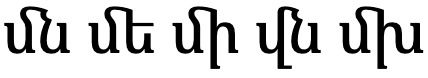
Ligatures. (Click to see the components.)
Tonal punctuation marks
The tonal punctuation marks described in tonalmarks and emphasis are not combining characters, but should nevertheless be positioned above the vowel they are associated with.
Tonal punctuation marks are spacing modifier characters, but they are positioned over base letters much like combining marks.
Due to print capabilities, it has become common to see those over a gap to the side of the letter, or as a half-spacing letter instead, however nowadays font rules can be used to achieve the overlapping effect in digital applications.
Case & other character transforms
Armenian is bicameral, and applications may need to enable transforms to allow the user to switch between cases.
The shapes of the upper and lowercase forms can differ significantly.
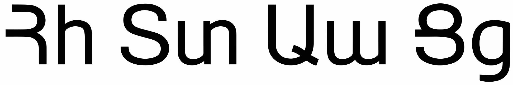
Examples of divergent upper and lowercase shapes.
This section is still undergoing research and development.
Grapheme clusters correspond to code points, and are used as typographic units for cursor movement. However, in-word line breaking may keep digraphs and ligated sequences together.
Grapheme clusters
Base | Modifier
Grapheme clusters can be used to segment Armenian words.
Armenian has no combining characters, but does use modifier characters for emphasis, exclamation and question marks. Those modifiers are usually positioned above a base character, but are not combining marks. The grapheme cluster definition treats each code point as a single character unit.
The following words show a variety of grapheme clusters. The 2nd and 4th contain digraphs. The 3rd contains a modifier question mark. The 4th ends with a ligated pair.
Click on the text version of these words to see more detail about the composition.
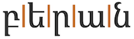
բերան
սուր
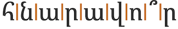
հնարավո՞ր
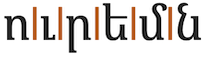
ուրեմն
Larger typographic units
The following may be treated as single units for word-internal line-breaking:
The u digraph, ie. ու.
Ligated consonant pairs, eg. մն.
Modifiers that appear over a base letter, eg. ո՞.
Browser behaviour
Test in your browser.The words test units that equate to grapheme clusters only, and others that include conjuncts. First, the text is displayed in a contenteditable paragraph, then in a textarea. Results are reported for Gecko (Firefox), Blink (Chrome), and WebKit (Safari) on a Mac.
բերանսուրհնարավո՞րուրեմն
Cursor movement.Move the cursor through the text.
Gecko, Blink, and WebKit browsers step through the text one code point at a time, which is equivalent to using grapheme clusters. It takes 2 steps to get past a letter with a modifier above. The movement is not affected by digraphs or ligatures.
Selection.Place the cursor next to a character and hold down shift while pressing an arrow key.
The behaviour is the same as for cursor movement.
Deletion. Forward deletion works in the same way as cursor movement. The backspace key deletes code point by code point, for all browsers.
Line-break.See this test. The CSS sets the value of the line-break property to anywhere. Change the size of the box to slowly move the line break point.
When the Gecko engine breaks a line it does not separate the components of the u digraph, nor the ligated forms. They do, however, wrap a modifier to the beginning of a line. Blink and WebKit don't keep digraphs and ligated forms together, but they wrap modifiers with their base letter.
Double-click.Double-click the mouse inside each word.
Blink and WebKit browsers will highlight a whole word in each case. Gecko, however, doesn't highlight a whole word containing a modifier – the selection needs to be manually extended to include the whole word.
Punctuation & inline features
Phrase & section boundaries
,␣․␣՝␣։␣.
Armenian uses a mixture of ASCII and Armenian punctuation.
phrase
,
․
՝
sentence
։
.
՝ is used more like the English colon, and ․ functions like a semi-colon.
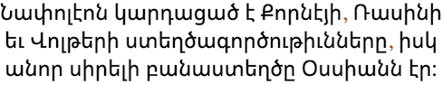72ppi">
translation
Napoleon read the works of Corneille, Racine and Voltaire, and his favorite poet was Ossian.
A sentence containing commas.
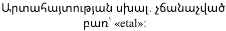72ppi">
translation
Expression error: unrecognized word: "etal".
A sentence containing the Armenian equivalents of the semi-colon, colon, and full stop (in that order).
Question & exclamation marks
՞␣՜
Armenian indicates questions, exclamations and emphasis by associating a modifier with a vowel in a sentence, rather than by using sentence-final punctuation.
՞ is used for question, and is placed above and slightly to the right of the last vowel of the question word (usually the stressed vowel), rather than at the end of the sentence
translation
Is it possible to combine family and politics?
Armenian question mark.
՜ is used rather than an exclamation mark.
The modifier marks should appear above and slightly to the right of the vowel being modified, however, due to mechanical difficulties in printing, fonts often put the modifier alongside the vowel instead.
Bracketed text
(␣)
Armenian commonly uses ASCII parentheses to insert parenthetical information into text.
start
end
standard
(
)
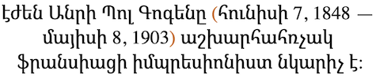72ppi">
translation
Eugène Henri Paul Gauguin (June 7, 1848 – May 8, 1903) was a world-renowned French Impressionist painter.
An example of parentheses in Armenian.
Quotations & citations
«␣»
Armenian uses « and » for quote marks. ASCII quotation marks are sometimes used, but as they resemble other Armenian characters, their use is discouraged.ws
start
end
initial
«
»
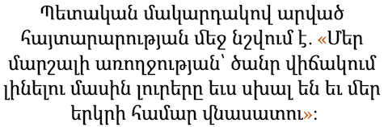72ppi">
translation
The statement made at the state level states: "The news about our marshal's health being in a serious condition is also wrong and harmful for our country."
An example of parentheses in Armenian.
Emphasis
՛
Armenian indicates emphasis by associating the modifier ՛ with a vowel in the emphasised word – usually the last vowel.
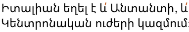72ppi">
translation
Italy was part of both the Entente and the Central Powers."
Armenian emphasis mark (used twice) in a sentence.
The modifier mark should appear above and slightly to the right of the vowel being modified, however, due to mechanical difficulties in printing, fonts often put the modifier alongside the vowel instead.
Other inline text decoration
Other punctuation
%␣…
Deprecated/archaic punctuation marks
՟
՟ is one of 4 abbreviation marks found in manuscripts to abbreviate words such as God, Jesus, Christos, etc. It is placed above the abbreviated word and spans all of its letters. Difficulty of implementation in modern systems led to it becoming an archaic usage.
՚␣ՙ
The Unicode Standard recommends not to use ՚, but to use ’ insteadu,318.
ՙ was encoded by mistake, and is not used in Armenian. You should use ʻ instead.u,318
Line & paragraph layout
Line breaking & hyphenation
Lines are generally broken at inter-word spaces.
Line-edge rules
As in almost all writing systems, certain punctuation characters should not appear at the end or the start of a line. The Unicode line-break properties help applications decide whether a character should appear at the start or end of a line.
The following list gives examples of typical behaviours for characters used in modern Armenian. Context may affect the behaviour of some of these and other characters.
Click on the Armenian characters to show what they are.
« “ ( ․ ֏ should not be the last character on a line
» ” ) ֊ ‐ ։ . : % should not begin a new line
Some characters need to remain attached to following or preceding numbers even if they are separated by space or other characters.
The following characters should not produce a line-break when they appear inside or alongside a word: ʼ ՛ ՜ ՝ ՞ ՟.
See also orthographicS for other situations where line-breaks may be avoided, incuding between digraphs and ligated forms.
In-word line-breaking
At the end of a line, when a word is split, ֊ can be used. Note that this is different from the hyphen which is used to bind compound words together, and it is only used where a word is broken across a line ending.
Text alignment & justification
The most common approach to justification relies on adjustment of spaces.d
Baselines, line height, etc.
Armenian uses the so-called 'alphabetic' baseline, which is the same as for Latin and many other scripts.
To give an approximate idea, fig_baselines compares Latin and Armenian glyphs from Noto fonts. The metrics of the Armenian letters is typically the same as or very similar to the Latin metrics. Modifier glyphs poke just very slightly above the Latin ascender height.
Font metrics for Latin text compared with Armenian glyphs in the Noto Serif Armenian (top) and Noto Sans Armenian (bottom) fonts.
fig_baselines_other shows similar comparisons for the Sylfaen and Calibri fonts.
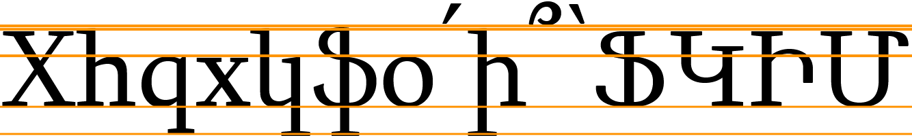
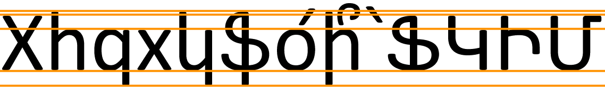
Latin font metrics compared with Armenian glyphs in the Sylfaen (top) and Calibri (bottom) fonts.
Counters, lists, etc.
You can experiment with counter styles using the Counter styles converter. Patterns for using these styles in CSS can be found in Ready-made Counter Styles, and we use the names of those patterns here to refer to the various styles.
The Armenian language uses 2 additive styles (one uppercase, the other lowercase).
Additive
The upper-armenian additive style uses the letters shown below. It is specified for a range between 1 and 9,999.